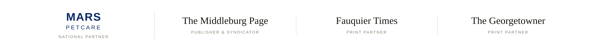
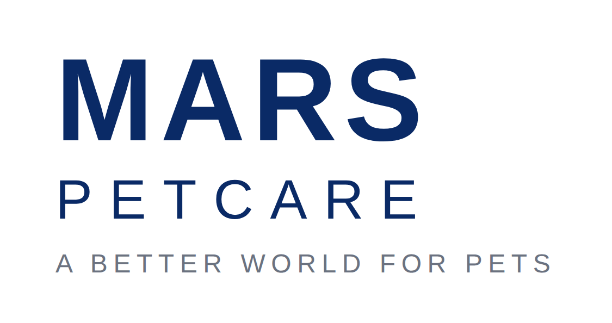
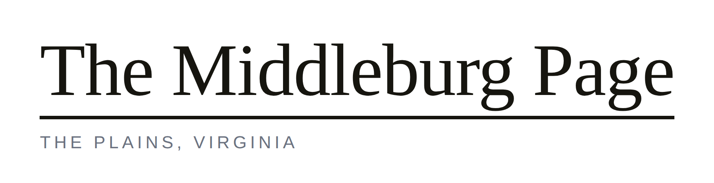
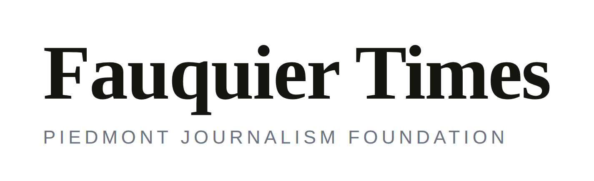
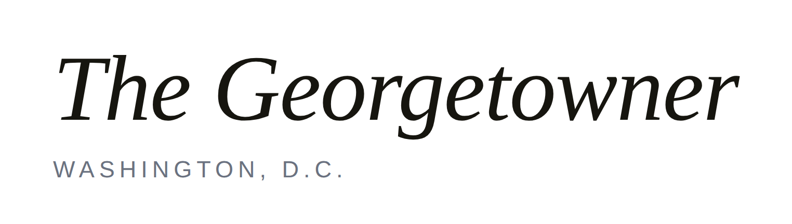

Mars Petcare and three community newspapers are running a twelve-month test of a simple proposition — and building something any other paper can copy.

The proposition is that local news organisations can carry a national brand's message further, and more credibly, than the brand can carry it alone — and that doing so can fund the journalism and the shelters at the same time.
Once a month, a full page appears in the Fauquier Times and The Georgetowner. One half is a reported animal rescue story from the Middleburg Humane Foundation. The other half explains how Mars makes its pet food and the science behind it. Along the bottom runs a row of eight reader-submitted pet photographs, each paid for by the family whose pet appears.
The page is produced by The Middleburg Page, which also acts as central syndicator for community newspapers elsewhere that adopt the model.
| Term | Twelve months, one full page per month |
| Launch | Timed to Mars Global Adoption Weekend |
| Fauquier Times and The Georgetowner, plus the Georgetowner's ‘In Country’ section | |
| Rescue partner | Middleburg Humane Foundation |
| Rescue reporting | Dana Priest, Pulitzer Prize winner, Washington Post |
| Formats | Print page, phone, web, postcard and 9:16 video — all from one source |
| Expansion | Syndicated to community papers near Mars sites, via state press associations |
Mars's corporate message is that Mars is local. That claim cannot be proved by a national buy — a network spot announcing that you are local argues against itself. But the same sentence, printed in the Fauquier Times next to the school board coverage and a story about a dog somebody in town actually adopted, is not an argument. It is a demonstration.
There are hundreds of community newspapers in hundreds of communities, and every one of them has a local animal rescue organisation and a local pet food store. Mars has 38 factories across the United States and a presence in 49 states. Those two maps overlap almost everywhere.

Mars, Incorporated is a family-owned business with more than 150,000 associates worldwide. Mars Petcare is its largest segment: over 100,000 associates in more than 130 countries, a portfolio including PEDIGREE, WHISKAS, IAMS, EUKANUBA, ROYAL CANIN, CESAR, SHEBA, TEMPTATIONS, GREENIES, NUTRO, ORIJEN and ACANA, and a veterinary network of roughly 3,000 clinics caring for more than 35 million pets a year.
Its stated purpose is A Better World for Pets. Mars is the national partner and the source of the science and company content on the page.

The Middleburg Page was started to test whether particular groups of readers would rally around, and fund, particular beats of coverage. It is published by Leland Schwartz from The Plains, Virginia, and printed inside the Fauquier Times and The Georgetowner.
In this partnership it is the publisher, the editorial producer, and the central syndicator for papers that adopt the model elsewhere.

The Fauquier Times serves Fauquier County and the surrounding Virginia Piedmont. It is published by the Piedmont Journalism Foundation, a nonprofit — a structure that makes the community-service argument for this page unusually easy to put to a board.
It is the primary print partner and the paper of record for the rescue reporting.

The Georgetowner has covered Washington, D.C. for decades and carries the page into the capital through its ‘In Country’ section — part of a deliberate effort to build a news, events and advertising bridge between Hunt Country and Washington.
It is the second print partner and the urban half of the readership.
The rescue partner. The Foundation supplies the animals, the access and the outcomes that the reporting is built on, and receives a share of the reader revenue the page generates. Every story on the page begins in its kennels.
Half of every page is Mars. Not advertising — reporting, about a company most readers know only as a chocolate bar, and about a body of pet science almost nobody outside the industry knows exists.
Mars has been running pet nutrition research since the early 1950s, formalised in 1973 as a dedicated institute at Waltham on the Wolds in Leicestershire, England. It studies the nutrition and wellbeing of dogs, cats, horses and fish, and the benefits of pets to people. Its findings underpin PEDIGREE, ROYAL CANIN, WHISKAS, CESAR, NUTRO and SHEBA.
Its discoveries are genuinely interesting to a general reader, which is precisely what makes them good newspaper stories:
Mars Petcare's $110 million research campus houses a Pet Feeding Center with capacity for up to 180 dogs and 120 cats, and serves as the global centre of excellence for dry cat and dog food across PEDIGREE, WHISKAS, ROYAL CANIN, IAMS and Banfield. Roughly 140 scientists and technicians work there.
Banfield Pet Hospital, VCA Animal Hospitals, BluePearl, AniCura, Linnaeus and Antech Diagnostics together form the largest veterinary network in the world — about 3,000 clinics seeing more than 35 million pets a year. For a page about responsible pet ownership this is an unusually deep bench, and it is local in a way readers can verify.
Mars runs the State of Pet Homelessness Project, described as the largest international study of pet homelessness yet undertaken, and holds an annual Mars Pet Adoption Weekend — now a global event — during which Mars and partner organisations cover adoption fees at participating shelters.
A sponsored page carrying reported journalism works only if the wall between the two is explicit. This is the standard, and it is printed on the page itself, in the same size type as everything else.
“Mars Petcare funds this page and reviews only its own company content. The Middleburg Page retains full editorial control of all rescue reporting.”
This is not a courtesy to the sponsor. It is the thing that lets the page exist at all. Disclosed plainly, it is a model any editor can defend to any board. Left implicit, it is a liability that travels with every copy printed.
| Mars Petcare | Ben Anders · Lindsay Kordik |
| The Middleburg Page | Leland Schwartz, Publisher — editor@themiddleburgpage.com · 540 422 1376 |
| Fauquier Times | Kelly Tremaine |
| The Georgetowner | Sonya Bernhardt |
| Rescue reporting | Dana Priest — Piedmont Journalism Foundation board |
| Public relations | Vicki Bendure |
| Social media | Red Thinking |
A note on the logos. The partner marks shown here are typographic placeholders set for layout purposes. Final artwork should be supplied by each partner — in particular, Mars brand assets and their permitted usage must come from Mars and be applied in accordance with Mars brand guidelines before publication.